콘크리트산업기사 (2020-06-06 기출문제)
1과목: 콘크리트재료 및 배합
1. 콘크리트용 팽창제(KS F 2562)품질 규정시 적용하는 시험이 아닌 것은?
- 비표면적 시험
- 내흡수 성능 시험
- 산화마그네슘 시험
- 팽창성(길이변화율) 시험
(정답률: 52%)

2. 레디믹스트 콘크리트의 혼합에 사용되는 물로서 적합하지 않은 것은?
- 품질시험을 행하지 않은 회수수
- 품질시험을 행하지 않은 상수돗물
- 모르타르의 압축 강도비가 재령 7일 및 28일에서 100%인 지하수
- 시멘트 응결시간의 차가 초결은 30분 이내, 종결은 60분 이내인 하선수
(정답률: 81%)
3. 콘크리트 배합설계의 물-결합재비에 대한 설명으로 틀린 것은?
- 제빙화학제가 사용되는 콘크리트의 물-결합재비는 45% 이하로 한다.
- 소요의 강도, 내구성, 수밀성 및 균열저항성 등을 고려하여 정한다.
- 모르타르 또는 콘크리트에 포함된 시멘트 페이스트 중의 결합재에 대한 물의 체적 백분율이다.
- 콘크리트의 압축강도를 기준으로 물-결합재비를 정하는 경우 시험용 공시체는 재령 28일을 표준으로 한다.
(정답률: 71%)
4. 다음과 같은 상태의 잔골재의 유효 습수율은?
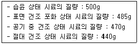
- 3.09%
- 3.19%
- 6.38%
- 6.82%
(정답률: 68%)
5. 콘크리트의 일반적인 혼화제가 아닌 것은?
- 감수제
- 지연제
- 착색제
- 윤동화제
(정답률: 93%)
6. 콘크리트의 압축강도 시험 횟수가 30회이며, 설계기준압축강도(fck)가 40MPa이고 표준편차(s)가 4.5MPa일 때 배합강도(fcr)는?
- 45.0MPa
- 45.5MPa
- 46.0MPa
- 46.5MPa
(정답률: 44%)
7. 운반시간이 길어짐에 따라 반죽질기의 저하를 억제하여 시공성과 작업성을 확보할 수 있으며, 서중 콘크리트 타설 시 첨가하는 혼화제는?
- 지연제
- 유동화제
- AE감수제
- 분리저감제
(정답률: 83%)
8. KS L 5110에 의하여 시멘트 비중시험을 실시한 결과, 르샤틀리에 비중병에 광유를 주입하고 측정한 눈금이 0.6mL이었다. 이 비중병에 시멘트 64g을 넣고 광유가 올라온 눈금을 측정한 결과 21.25mL를 얻었다. 시멘트의 비중은?
- 3.0
- 3.⑤
- 3.10
- 3.15
(정답률: 76%)
9. 골재의 체가름 시험에 대한 설명으로 틀린 것은?
- 시료는 사분법 또는 시료 채취기로 채취한다.
- 잔골재와 굵은 골재를 혼합하여 체가름 시험을 한다.
- 분취한 시료는 (1⑤±5)℃의 온도로 일정 질량이 될 때까지 건조한다.
- 각 체에 남은 시료를 전 시료 질량의 0.1%이상까지 정확히 측정한다.
(정답률: 74%)
10. 시멘트의 분말도에 대한 설명으로 틀린 것은?
- 분말도가 큰 시멘트는 블리딩이 적고, 워커블한 콘크리트가 얻어진다.
- 분말도가 큰 시멘트는 조기강도가 작지만 장기강도가 큰 경향을 나타낸다.
- 분말도가 큰 시멘트는 풍화하기 쉽고 건조수축이 커져서 균열이 발생하기 쉽다.
- 시멘트 입자의 크기정도를 분말도 또는 비표면적으로 나타내며, 시멘트 입자가 미세할수록 분말도가 크다고 말한다.
(정답률: 70%)
11. 배합설계에서 잔골재의 절대용적이 320L, 굵은 골재의 절대용적이 560L일 때 잔골재율은?
- 36.4%
- 42.5%
- 57.1%
- 63.6%
(정답률: 61%)
12. 동해 저항 콘크리트에 요구되는 공기량에 대한 설명으로 틀린 것은?
- 연행되는 공기량의 허용 편차는 ±1.5%이다.
- 설계기준압축강도가 30MPa를 초과하는 경우, 공기량은 1% 감소시킬 수 있다.
- 굵은 골재 최대 치수가 20mm인 경우, 심한 노출 조건에서 필요 공기량은 6.0%이다.
- 굵은 골재 최대 치수가 25, 40mm인 경우, 보통 노출 조건에서 필요 공기량은 동일하다.
(정답률: 48%)
13. 콘크리트 압축강도를 6회 측정한 시험결과가 아래와 같을 때 표준편차를 구하면?
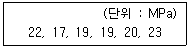
- 1.⑤MPa
- 1.54MPa
- 1.69MPa
- 2.19MPa
(정답률: 65%)
14. 골재에 대한 설명으로 옳지 않은 것은?
- 골재의 평균입경이 클수록 조립률은 커진다.
- 골재의 입형이 양호하고 입도분포가 적당하면 실적률은 큰 값을 가진다.
- 골재의 표면건조 포화상태란 골재입자의 표면에 물은 없으나 내부에는 물이 꽉 차있는 상태이다.
- 굵은 골재의 최대 치수란 질량비로 90% 이상을 통과시키는 체중에서 최대 치수의 체눈의 호칭치수로 나타낸 굵은 골재의 치수를 말한다.
(정답률: 48%)
15. 시멘트의 응결시험 장치로 짝지어진 것은?
- 흐름 시험기, 비중병
- 비중용기, LA 마모시험기
- 길모어 장치, 비카트 장치
- 오토클레이브 장치, 길이변화 몰드
(정답률: 79%)
16. 굵은 골재의 체가름 시험 결과가 아래의 표와 같은 때 조립률은?
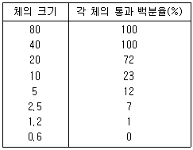
- 3.15
- 3.85
- 6.15
- 6.85
(정답률: 47%)
17. 콘크리트 1m3를 만드는 배합설계에서 필요한 골재의 절대용적이 720L이었다. 잔골재율이 34%, 잔골재 밀도가 2.7g/cm3, 굵은 골재 밀도가 2.6g/cm3일 때, 단위 잔골재량(S)과 단위 굵은 골재량(G)을 구하면?
- S=636kg, G=1283kg
- S=661kg, G=1236kg
- S=1236kg, G=661kg
- S=1283kg, G=636kg
(정답률: 72%)
18. 시멘트의 강도는 수소결합과 같은 약한 결합작용이나 경화가 진행되면서 C-S-C(Ⅱ)와 같은 섬유상 수화물이 Si-O-Si의 강한 결합으로 전환되어 강도가 증진되는데 이러한 강도발현의 영향과 관계가 없는 것은?
- 믹서의 성능
- 물-결합재비
- 수화온도(양생조건)
- 시멘트 조선 및 분말도
(정답률: 86%)
19. 혼화재의 품질시험에서 아래의 내용을 무엇이라고 하는가?
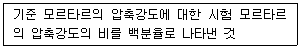
- 활렬강도
- 플로값 비
- 길이변화비
- 활성도 지수
(정답률: 84%)
20. 다음 시멘트 클링커의 조성광물 중 건조수축이 가장 큰 것은?
- 3CaO·SiO2
- 2CaO·SiO2
- 3CaO·Al2O3
- 4CaO·Al2O3·Fe2O3
(정답률: 70%)
2과목: 콘크리트제조, 시험 및 품질관리
21. 레디믹스트 콘크리트의 지정 슬럼프 값이 50mm일 때 슬럼프의 허용오차로 옳은 것은?
- ±10mm
- ±15mm
- ±20mm
- ±25mm
(정답률: 68%)
22. 원기둥 콘크리트 공시체(지름 150mm, 길이 300mm)의 쪼갬 인장 강도 시험으로 얻어진 최대 하중이 150kN일 때, 이 콘크리트의 쪼갬 인장강도는?
- 2.1MPa
- 2.4MPa
- 3.0MPa
- 3.1MPa
(정답률: 52%)
23. 콘크리트의 압축 강도 시험에 관한 일반적인 설명으로 틀린 것은?
- 재하속도는 0.6±0.4MPa 범위 내에서 한다.
- 공시체는 지름의 2배의 높이를 가진 원기둥형으로 한다.
- 시험기의 가압판과 공시체의 끝면은 직접 밀착시키면 위험하므로 쿠션재를 넣어서 보호한다.
- 콘크리트의 압축 강도의 표준은 특별한 경우를 제외하고는 일반적으로 재령 28일을 설계의 표준으로 한다.
(정답률: 67%)
24. 일정량의 AE제를 사용한 콘크리트에서 연행되는 공기량에 영향을 주는 요소에 대한 설명으로 틀린 것은?
- 슬럼프가 클수록 공기량은 많게 된다.
- 물-결합재비가 클수록 공기량은 많게 된다.
- 단위 잔골재량이 적을수록 공기량은 많게 된다.
- 콘크리트의 온도가 낮을수록 공기량은 많게 된다.
(정답률: 50%)
25. 콘크리트의 성능과 관련된 지표를 정리한 것으로 틀린 것은?
- 투수계수 – 슬럼프, 블리딩
- 응결특성 – 시멘트의 품질, 혼화재료 품질, 타설 시 온도
- 단열온도상승특성 – 결합재의 품질, 단위 결합재량, 타설 시 온도
- 펌퍼빌리티 – 골재의 품질, 굵은 골재의 최대 치수, 슬럼프, 블리딩
(정답률: 60%)
26. 무근 콘크리트의 단면이 큰 경우 슬럼프 값(㉠)과 굵은 골재의 최대 치수(㉡)로 옳은 것은?
- ㉠ 60~120mm, ㉡ 20mm 또는 25mm
- ㉠ 50~100mm, ㉡ 40mm
- ㉠ 60~120mm, ㉡ 40mm
- ㉠ 50~100mm, ㉡ 20mm 또는 25mm
(정답률: 67%)
27. 레디믹스트 콘크리트를 오후 2시부터 비비기 시작하엿다면 타설 종류 시간으로 옳은 것은? (단, 외기기온이 27℃인 경우)
- 오후 3시
- 오후 3시 30분
- 오후 4시
- 오후 4시 30분
(정답률: 68%)
28. 다음 중 워커빌리티 측정 시험이 아닌 것은?
- 비비시험
- L플로시험
- 리몰딩 시험
- 다짐계수시험
(정답률: 54%)
29. 자재 품질관리에서 시멘트의 품질관리를 수행하는 시기 및 횟수로 옳지 않은 것은?
- 공사 시작 전
- 공사 중 1회/월 이상
- 장기간 저장한 경우
- 공사 후
(정답률: 73%)
30. 콘크리트의 비파괴시험 방법 중 분극저항법으로 알 수 있는 것은?
- 철근의 부식유무
- 콘크리트의 압축강도
- 콘크리트의 동해 정도
- 콘크리트의 탄산화 정도
(정답률: 60%)
31. 시멘트의 저장에 대한 설명으로 틀린 것은?
- 시멘트의 온도가 너무 높을 때는 그 온도를 낮춘 다음에 사용한다.
- 포대시멘트를 쌓아 올리는 높이는 13포대 이하로 하며, 저장기간이 길어질 우려가 있는 경우에는 7포대 이상 쌓아 올리지 않는 것이 좋다.
- 장기간 저장한 시멘트도 저장관리가 잘 되엇으면 사용 전에 시험을 통한 품질 확인을 하지 않아도 상관없으며 사용여부나 배합의 조정 등도 하지 않아도 무방하다.
- 시멘트는 공기 중의 수분과 접촉하면 풍화하므로 방습에 주의하고 시멘트창고는 되도록 공기의 유통이 없게 하며 포대의 경우 지상으로부터 0.3m 이상 떨어져서 쌓아 놓아야 한다.
(정답률: 72%)
32. 침하균열의 방지 대책으로 옳지 않은 것은?
- 타설 속도를 늦게 하고 1회 타설 높이를 작게 한다.
- 침하 종료 이전에 급격하게 굳어져 점착력을 잃지 않은 시멘트, 혼화제를 선정한다.
- 단위수량을 될 수 있는 한 크게 하고, 슬럼프가 작은 콘크리트를 잘 다짐해서 시공한다.
- 균열을 조기에 발견하고, 각재 등으로 두드리거나 흙손으로 눌러서 균열을 폐색시킨다.
(정답률: 65%)
33. 콘크리트의 압축 강도 시험에 관한 설명으로 옳지 않은 것은?
- 공시체의 지름은 0.1mm, 높이는 1mm까지 측정한다.
- 공시체의 제작에서 몰드를 떼는 시기는 콘크리트 채우기가 끝나고 나서 16시간 이상 3일 이내로 한다.
- 일반적으로 사용하는 공시체는 원통형 공시체로 지름에 대한 길이의 비가 1:3인 것을 많이 사용한다.
- 콘크리트의 압축강도는 공시체의 건조상태나 온도에 따라 상당히 변화하는 경우도 있으므로, 양생을 끝낸 직후 상태에서 시험을 하여야 한다.
(정답률: 51%)
34. 콘크리트의 수밀성을 향상시키기 위한 방법으로 적합하지 않은 것은?
- 경량골재를 사용한다.
- 습윤양생 기간을 충분히 한다.
- 혼화재로 플라이 애시를 사용한다.
- 배합 시 콘크리트의 물-결합재비를 저감시킨다.
(정답률: 62%)
35. 슬럼프 시험방법에 관한 내용으로 옳지 않은 것은?
- 슬럼프 시험기의 높이는 30cm이다.
- 슬럼프 시험은 굳지 않은 콘크리트 품질 관리의 필수 항목이다.
- 무너져 내린 콘크리트의 바닥에서 정상부까지의 높이를 슬럼프 값이라 한다.
- 슬럼프 시험은 3층으로 나누어 콘크리트를 부어넣고 매 층마다 25회 다짐을 하여야 한다.
(정답률: 69%)
36. 히스톡램(histogram)의 작성순서를 보기에서 골라 올바르게 나열한 것은?
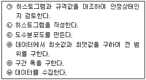
- ㉥-㉣-㉤-㉢-㉡-㉠
- ㉥-㉤-㉣-㉢-㉡-㉠
- ㉥-㉣-㉢-㉤-㉡-㉠
- ㉥-㉡-㉤-㉣-㉢-㉠
(정답률: 59%)
37. 콘크리트의 내구성을 향상시키는 방법에 대한 설명으로 틀린 것은?
- 습윤양생을 충분히 할 것
- 철저한 다짐을 통하여 시공할 것
- 물-결합재비를 가능한 한 작게 할 것
- 체적변화가 많은 콘크리트를 만들 것
(정답률: 77%)
38. AE제를 사용한 콘크리트에서 물-결합재비가 일정하고 공기량만 증가시킬 경우, 공기량이 1% 증가함에 따라 변화하는 내용으로 틀린 것은?
- 슬럼프가 약 25mm 증가한다.
- 휨강도가 약 4~6% 감소한다.
- 압축강도가 약 4~6% 증가한다.
- 탄성계수가 약 7~8×102MPa 감소한다.
(정답률: 62%)
39. 콘크리트의 굵은 골재 계량값이 아래와 같을 때, 계량오차와 허용치 만족여부를 순서대로 올바르게 나열한 것은?
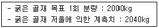
- 계량오차 : 1%, 허용치 만족여부 : 합격
- 계량오차 : 2%, 허용치 만족여부 : 합격
- 계량오차 : 1%, 허용치 만족여부 : 불합격
- 계량오차 : 2%, 허용치 만족여부 : 불합격
(정답률: 73%)
40. 콘크리트의 각종 강도에 관한 설명으로 틀린 것은?
- 인장 강도/압축 강도의 비는 고강도 콘크리트일수록 작아진다.
- 콘크리트의 인장 강도 시험은 쪼갬 인장강도 시험방법을 주로 이용한다.
- 콘크리트의 압축 강도가 일반 콘크리트의 품질관리에 가장 대표적으로 이용된다.
- 압축 강도 시험에서 재하속도를 빠르게 하면 강도값이 실제보다 작아지는 경향이 있다.
(정답률: 63%)
3과목: 콘크리트의 시공
41. 다음은 프리플레이스트 콘크리트의 압송에 대한 설명이다. ( )안에 들어가는 기준값으로 옳은 것은?
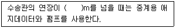
- 40
- 70
- 100
- 130
(정답률: 64%)
42. 콘크리트 공장제품의 양생에 대한 설명으로 틀린 것은?
- PSC 말뚝 등은 주로 오토클레이브 양생으로 제작한다.
- 가압양생은 성형된 콘크리트에 10MPa정도의 압력을 가한 후 고온으로 양생한다.
- 증기양생을 할 EO는 일반적으로 비빈 후 2~3시간 이상 경과된 후에 증기양생을 실시한다.
- 오토클레이브 양생 등의 고압증기양생을 실시한 공장제품에는 양생 후 재령에 따른 콘크리트 강도의 증가는 거의 기대할 수 없다.
(정답률: 41%)
43. 콘크리트 타설 과정에서 이어치기면(Cold Joint)의 품질관리에 관련된 사항으로 틀린 것은?
- 콘크리트 타설 시 이어치기 한계시간을 준수한다.
- 외기온도가 25℃ 초과인 경우, 2시간 이내에 콘크리트의 이어치기를 한다.
- 외기온도가 25℃ 이하인 경우, 3시간 이내에 콘크리트의 이어치기를 한다.
- 콘크리트를 2층 이상으로 나누어 타설할 경우, 상층의 콘크리트 타설은 하층의 콘크리트가 굳기 시작하기 전에 하여야 한다.
(정답률: 63%)
44. 방사선 차폐용 콘크리트에 일반적으로 사용되는 중량골재가 아닌 것은?
- 자철광
- 적철광
- 바라이트
- 팽창성 혈암
(정답률: 68%)
45. 일반적인 상황에서 트레미를 사용한 현장 타설 콘크리트말뚝을 수중 콘크리트로 타설할 경우 슬럼프의 표준값은?
- 100~150mm
- 130~180mm
- 150~190mm
- 180~210mm
(정답률: 46%)
46. 물-결합재비(W/B)를 결정할 때 고려할 사항이 아닌 것은?
- 강도
- 입도
- 내구성
- 수밀성
(정답률: 54%)
47. 콘크리트의 이음부 시공에 대한 설명으로 틀린 것은?
- 아치의 시공이음은 아치축에 직각이 되도록 설치하여야 한다.
- 신축이음은 양쪽의 구조물 혹은 부재가 구속되어 있는 구조이어야 한다.
- 바닥틀의 시공이음은 슬래브 또는 보의 경간 중앙부 부근에 두어야 한다.
- 바닥틀과 일체로 된 기둥 또는 벽의 시공이음은 바닥틀과의 경계 부근에 설치하는 것이 좋다.
(정답률: 51%)
48. 한중 콘크리트의 강도를 예측하는데 이용되는 적산 온도의 개념을 나타낸 식으로 옳은 것은? (단, θ:△t시간 중의 콘크리트의 평균 양생온도(℃), A: 정수로서 일반적으로 10℃를 사용, △t: 시간(일))
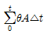
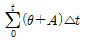
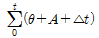
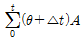
(정답률: 71%)
49. 고강도 콘크리트에 대한 설명으로 틀린 것은?
- 콘크리트의 수밀성을 높이기 위하여 공기연행제를 사용하는 것을 원칙으로 한다.
- 고강도 콘크리트에 사용되는 굵은 골재의 최대 치수는 40mm 이하로서 가능한 25mm이하로 한다.
- 설계기준압축강도가 보통(중량) 콘크리트에서 40MPa 이상인 콘크리트를 고강도 콘크리트라 한다.
- 설계기준압축강도가 경량골재 콘크리트에서 27MPa이상인 콘크리트를 고강도 콘크리트라 한다.
(정답률: 60%)
50. 다음 시멘트 중 댐과 같이 큰 단면의 콘크리트에 적합하지 않은 것은?
- 실리카 시멘트
- 고로 슬래그 시멘트
- 플라이 애시 시멘트
- 조강 포틀랜드 시멘트
(정답률: 69%)
51. 콘크리트의 습윤양생이 충분하지 못한 경우 발생하는 현상으로 틀린 것은?
- 강도감소
- 수밀성 저하
- 건조수축 증가
- 침하수축 감소
(정답률: 64%)
52. 수중 콘크리트의 타설 방법이 아닌 것은?
- 트레미에 의한 타설
- 단면증대에 의한 타설
- 밑열림 상자에 의한 타설
- 콘크리트 펌프에 의한 타설
(정답률: 60%)
53. 일반적으로 겨울철 연직시공이음부의 거푸집제거 시기는 콘크리트 타설 후 얼마 정도로 하는가?
- 4~6시간
- 7~9시간
- 10~15시간
- 15~20시간
(정답률: 63%)
54. 재령 24시간에서의 숏크리트의 초기강도 표준값은?
- 0.5~1.0MPa
- 1.0~3.0MPa
- 3.0~5.0MPa
- 5.0~10.0MPa
(정답률: 43%)
55. 고강도 콘크리트의 제조에 필수적으로 필요한 혼화제로서 물-결합재비가 낮은 콘크리트 배합의 워커빌리티를 개선하는데 가장 크게 기여하는 것은?
- 촉진제
- 실리카 퓸
- 플라이 애시
- 고성능 감수제
(정답률: 67%)
56. 수축이음(Contraction Joint)의 기능 또는 역할로 옳지 않은 것은?
- 콘크리트의 균열유도
- 콘크리트의 건조수축제어
- 콘크리트의 구조균열제어
- 콘크리트의 온도변화에 대응
(정답률: 47%)
57. 매스 콘크리트의 타설온도를 낮추는 방법으로 물, 골재 등의 재료를 미리 냉각 시키는 방법을 무엇이라 하는가?
- 프리 쿨링
- 콜드 조인트
- 트래미 방법
- 파이프 쿨링
(정답률: 68%)
58. 콘크리트의 펌프 압송부하에 관한 설명으로 틀린 것은?
- 콘크리트 슬럼프가 클수록 작다.
- 배관길이가 짧을수록 압송부하는 작다.
- 콘크리트 토출량(m3/h)이 같은 경우 수송관 지름이 클수록 크다.
- 콘크리트 토출량(m3/h)이 클수록 관내압력 손실이 커지고 펌프의 압송부하는 증가한다.
(정답률: 49%)
59. 한중 콘크리트에 대한 일반적인 설명으로 틀린 것은?
- 물-결합재비는 원칙적으로 60% 이하로 하여야 한다.
- 한중 콘크리트에는 공기연행 콘크리트를 사용하는 것을 원칙으로 한다.
- 하루의 평균기온이 4℃이하가 예상되는 조건일 때는 한중 콘크리트로 시공하여야 한다.
- 재료를 가열할 경우, 물 또는 시멘트를 가열하는 것으로 하며, 골재는 어떠한 경우라도 직접 가열하면 안된다.
(정답률: 64%)
60. 팽창 콘크리트에 대한 설명으로 틀린 것은?
- 한중 콘크리트인 경우 타설 시 콘크리트 온도는 10℃이상 20℃미만으로 한다.
- 팽창재는 다른 재료와 별도로 질량으로 계량하며 그 오차는 1회 계량분량의 5%이내로 한다.
- 콘크리트 거푸집 존치기간은 평균기온 20℃ 미만인 경우에는 5일 이상, 20℃이상인 경우에는 3일 이상으로 한다.
- 콘크리트의 비비기 시간은 강제식 믹서를 사용하는 경우 1분 이상, 가경식 믹서를 사용하는 경우 1분 30초 이상으로 한다.
(정답률: 59%)
4과목: 콘크리트 구조 및 유지관리
61. 구조물의 안전성 평가에서 안전성을 좌우하는 가장 중요한 사항으로, 안전성 조사 시 우선적으로 파악하여야 하는 것은?
- 균열
- 부재변형
- 철근부식
- 하중 및 단면
(정답률: 69%)
62. 콘크리트의 강도평가에 대한 설명으로 옳은 것은?
- 초음파 속도법에 의한 콘크리트 추정강도에 대한 정밀도가 매우 높다.
- 조합법은 반발경도법과 초음파 속도법을 조합하여 압축강도 추정에 대한 정밀도를 향상시키기 위해 실시한다.
- 반발경도법은 측정부위를 10cm 간격으로 격자망을 구성하고 교차점 10개소 이상을 해머로 타격하여 평균 반발경도R을 구한다.
- 인발법은 가력 헤드를 지닌 앵커볼트와 원뿔형의 콘크리트를 뽑아내는 반력링을 사용하여 소요되는 최대 인발력으로 인장강도를 추정한다.
(정답률: 50%)
63. 콘크리트구조설계에서 피로를 고려하지 않아도 되는 강재의 종류별 응력범위로 틀린 것은?
- 긴장재(기타부위) : 160MPa
- 이형철근(fy=300MPa) : 130MPa
- 이형철근(fy=400MPa) : 140MPa
- 긴장재(연결부 또는 정착부) : 140MPa
(정답률: 72%)
64. 보강의 시공 및 검사 내용 중 적합하지 않은 것은?
- 사용할 재료는 현장의 상황에 따라 시험을 실시하지 않아도 된다.
- 기존 시설물에 대한 바탕처리는 설계조건을 만족시키도록 적절히 실시하여야 한다.
- 보강 완료 후 설계에 정해진 조건에 부합된 시공이 되었는가의 여부를 검사하여야 한다.
- 보강에 대한 시공을 할 경우에는 기존 시설물을 손상시키는 일이 없도록 세심한 주의를 기울여야 한다.
(정답률: 86%)
65. 강도설계법에 의한 전단설계에서 전단보강철근을 사용하지 않고 계수하중에 의한 전단력 Vu=100kN을 지지하려고 한다. 보의 폭이 1000mm일 경우 보의 유효깊이의 최솟값은? (단, fck=25MPa이다.)
- 120mm
- 160mm
- 240mm
- 320mm
(정답률: 28%)
66. 철근의 정착에 대한 설명으로 틀린 것은?
- 압축철근 정착길이는 인장철근 정착길이보다 길 필요는 없다.
- 압축철근의 정착에는 갈고리를 두는 것이 매우 유효하다.
- 정착 방법에는 묻힘길이에 의한 정착, 갈고리에 의한 정착, 기계적 정착 등이 있다.
- 위험단면에서 철근의 설계기준항복강도를 발휘하는 데 필요한 최소 묻힘 길이를 정착길이라고 한다.
(정답률: 56%)
67. 아래 그림과 같은 단철근 직사각형 보에서 압축연단에서 중립축까지의 거리는? (단, As=3000mm2, fck=24MPa, fy=400MPa)
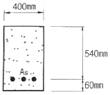
- 162mm
- 173mm
- 184mm
- 195mm
(정답률: 45%)
68. 동결융해에 의해 콘크리트의 열화를 증대시키는 요인에 해당하지 않는 것은?
- 빈번한 동결융해 주기
- 흡수성이 큰 골재의 사용
- AE제와 같은 공기연행제 사용
- 콘크리트 내부의 많은 수분 함유
(정답률: 54%)
69. 시설물 상태에 따른 안전등급에 대한 내용으로 틀린 것은?
- A : 문제점이 없는 최상의 상태
- B : 보조부재에 경미한 결함이 발생하였으나 기능 발휘에는 지장이 없으며 내구성 증진을 위하여 보수가 필요한 상태
- C : 주요부재에 경미한 결함이나 보조부재에 광범위한 결함이 있으나 전체적인 안전에는 지장이 없는 상태
- D : 주요부재에 심각한 결함으로 인하여 시설물의 안전에 위험이 있어 즉각 사용을 금지해야하는 상태
(정답률: 51%)
70. 균열폭 0.2mm 이하의 미세한 결함에 대해 탄성실링제를 이용하여 도막을 형성, 방수성 및 내화성을 확보할 목적으로 사용하는 구조물 보수공법은?
- 단면증설공법
- 표면처리공법
- 탄소섬유시트 접착공법
- 침투성 방수제 도포공법
(정답률: 73%)
71. 하중 재하기간이 60개월 이상 된 철근 콘크리트 부재가 있다. 하중 재하 시 탄상처짐량이 20mm 발생했다고 하면 부재의 총처짐량은? (단, 압축철근비는 0.02이다.)
- 20mm
- 30mm
- 40mm
- 50mm
(정답률: 55%)
72. 보강공사를 위한 업무의 진행 순서로 옳은 것은?
- 보강방침의 결정 → 손상원인의 평가 → 목표성능의 설정 → 보강방법의 결정
- 목표성능의 설정 → 손상원인의 평가 → 보강방침의 결정 → 보강방법의 결정
- 보강방침의 결정 → 목표성능의 설정 → 손상원인의 평가 → 보강방법의 결정
- 손상원인의 평가 → 보강방침의 결정 → 목표성능의 설정 → 보강방법의 결정
(정답률: 50%)
73. 복철근 직사각형 보에서 다음 주어진 조건에 대한 등가압축 응력의 깊이(a)는? (단, bw=300mm, d=600mm, As=1935mm2, As’=860mm2, fck=21MPa, fy=400MPa, 이 보는 인장철근과 압축 철근이 모두 항복한다고 가정한다.)
- 65.7mm
- 80.3mm
- 145.2mm
- 160.8mm
(정답률: 57%)
74. 내동해성이 작은 골재를 콘크리트에 사용하는 경우 동결융해작용에 의해 골재가 팽항하여 파괴되어 떨어져 나가거나 그 위치의 콘크리트 표면이 떨어져 나가는 현상을 무엇이라 하는가?
- 백화
- 침식
- 팝아웃
- 스케일링
(정답률: 79%)
75. 포스트텐션 방식에 의한 프리스트레스트 콘크리트의 정착방법 중 옳지 않은 것은?
- BBRV 공법
- 롱라인 공법
- Dywidag 공법
- Freyssient 공법
(정답률: 66%)
76. 전기방식 공법에서 외부 전원을 필요로 하지 않는 공법은?
- 티탄 메시방식
- 유전 양극방식
- 내부 양극방식
- 도전성 도료방식
(정답률: 55%)
77. 다음 중 1방향 슬래브에 대한 설명으로 틀린 것은?
- 1방향 슬래브의 두께는 최소 50mm 이상으로 하여야 한다.
- 마주보는 두 변에만 지지되는 슬래브는 1방향 슬래브로 설계하여야 한다.
- 4변에 의해 지지되는 2방향 슬래브 중에서 단변에 대한 장변의 비가 2배를 넘으면 1방향 슬래브로 해석한다.
- 1방향 슬래브에서는 정모멘트 철근 및 부모멘트 철근에 직각방향으로 수축·온도철근을 배치하여야 한다.
(정답률: 49%)
78. 300mm×400mm단면을 가진 띠철근 기둥의 설계축강도(øPn)는? (단, fck=24MPa, fy=300MPa, 종방향철근 전체의 단면적(Ast)=5700mm2, ø=0.65)
- 2102kN
- 2829kN
- 3233kN
- 4042kN
(정답률: 34%)
79. 다음 중 옹벽을 설계할 때 고려해야 하는 안정조건이 아닌 것은?
- 전도에 대한 안정
- 활동에 대한 안정
- 벽체 좌굴에 대한 안정
- 지반지지력에 대한 안정
(정답률: 66%)
80. 기존 콘크리트 구조물의 탄산화 깊이측정 시험에 필요한 시약은?
- 벤젠
- 수산화칼슘
- 페놀프탈레인
- 완전 탈수한 등유
(정답률: 68%)